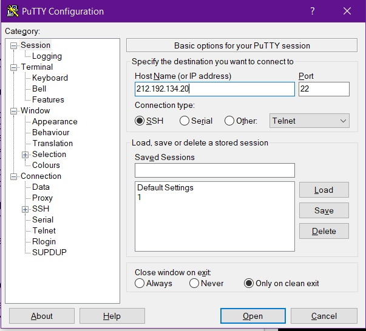
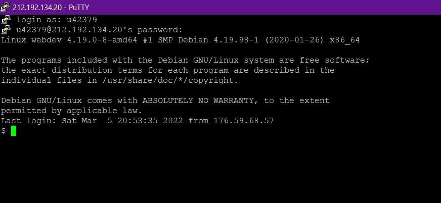
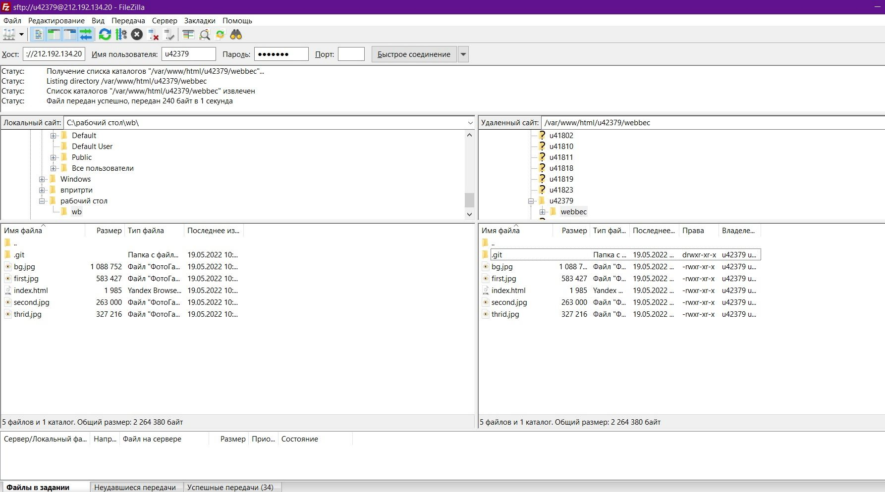

Вход в putty (устанавливает ssh соединение с удаленным сервером, с последующим запросом логина и пароля)
 С помощью команды ping на учебном сервере узнали IP-адрес веб-сервера
kubsu.ru
Ping kubsu.ru и kubsu-dev.ru(показывает может ли удаленный компьютер подключиться к серверу и задержку подключения)
С помощью команды nslookup узнали A-записи и MX-записи домена kubsu.ru и
kubsu-dev.ru
Команда nslookup для A-записей и mx-записей kubsu.ru и kubsu-dev.ru(запросов в доменной системе имен (DNS) с целью получения доменного имени, IP-адреса или другой информации из записей DNS.)
Запись MX (Mail eXchange) хранит соответствие доменного имени почтовому серверу этого домена.
Запись A (ANY) возвращает все возможные записи для указанного хоста
С помощью команды whois узнатли дату регистрации домена kubsu.ru и kubsu-
dev.ru
whois команда для проверки даты регистрации домена kubsu.ru и kubsu-dev.ru(команда показывает не только дату регистрации домена, а также информацию о том кому принадлежит домен его расположение и дату истечения срока домена)
С помощью SSH склонировали репозиторий в каталог
Использовани команды git clone для добавления файлов из репозитория github на удаленный сервер
С помощью программы FileZilla скопировали на локальный компьютер файлы задания
